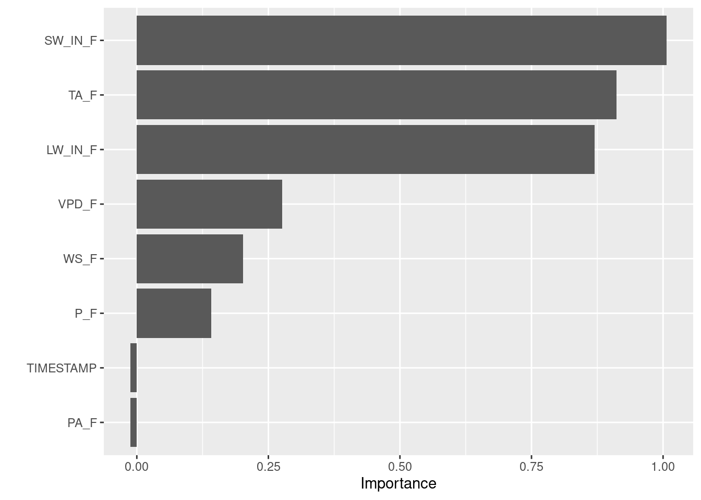
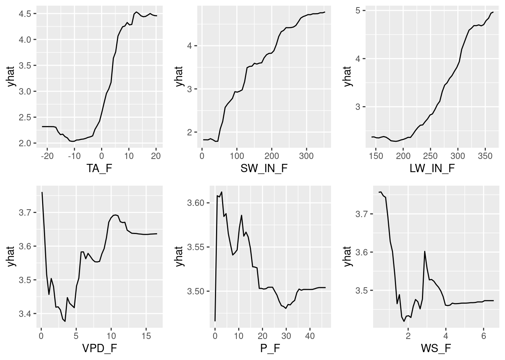

Chapter 12 Interpretable Machine Learning
A great advantage of machine learning models such as Random Forests or Neural Networks is that they can capture non-linear relationships and faint but relevant patterns in the dataset. However, this complexity comes with the trade-off that models turn into black-box models that cannot be interpreted easily. Therefore, model interpretation is crucial to demystify the decision-making processes of complex algorithms. In this chapter, we introduce you to a few key techniques to investigate the inner workings of your models.
To give examples for model interpretation, we re-use the Random Forest model that we created in Chapter 11. As a reminder, we predicted GPP from different environmental variables such as temperature, short-wave radiation, vapor pressure deficit, and others.
# The Random Forest model requires the following models to be loaded:
require(caret)
require(ranger)
rf_mod <- readRDS("data/tutorials/rf_mod.rds")
rf_mod## Random Forest
##
## 1910 samples
## 8 predictor
##
## Recipe steps: center, scale
## Resampling: Cross-Validated (5 fold)
## Summary of sample sizes: 1528, 1528, 1529, 1527, 1528
## Resampling results:
##
## RMSE Rsquared MAE
## 1.411155 0.7047382 1.070285
##
## Tuning parameter 'mtry' was held constant at a value of 2
## Tuning
## parameter 'splitrule' was held constant at a value of variance
##
## Tuning parameter 'min.node.size' was held constant at a value of 5Sidenote: There are two types of model interpretation: model-specific and model-agnostic interpretation. Here, we will focus on the latter as they can be applied to most machine learning models.
12.1 Partial dependence plots
Partial dependence plots (PDP) give insight on the marginal effect of a single predictor variable on the response when all other predictors are kept constant. The algorithm to create PDPs goes as follows (adapted from Boehmke & Greenwell (2019)):
For a selected predictor (x)
1. Construct a grid of j evenly spaced values across the range of x: {x1, x2, ..., xj}
2. For i in {1,...,j} do
| Copy the training data and replace the original values of x with the constant xi
| Apply the fitted ML model to obtain vector of predictions for each data point.
| Average predictions across all data points.
End
3. Plot the averaged predictions against x1, x2, ..., xjWritten-out, this means that we create a vector \(j\) of length \(i\) that holds evenly spaced values of our variable of interest \(x\). E.g., if the temperature in our dataset varies from 1 to 20, and we choose \(i=20\), we get a vector \([j_1 = 1, j_2 =2, ..., j_{20} = 20 ]\). Now, we create \(i\) copies of our training dataset and for each copy, we over-write the temperature data with the respective value in our vector. The first copy will have all temperature values set to 1, the second to 2, etc. Then, we use the model to calculate the response value for each entry in all copies. Per copy, we take the average response (\(\text{mean}(\hat{Y})\)) and plot that average against the value of the variable of interest. This gives us the response across a range of our variable of interest, whilst all other variables to not change. Therefore, we get the partial dependence of the response on the variable of interest. Here’s an illustration to make this clearer:
. Here, `Gr_Liv_Area` is the variable of interest $x$.](figures/pdp-illustration.png)
Figure 12.1: Visualisation of Partial Dependence Plot algorithm from Boehmke & Greenwell (2019). Here, Gr_Liv_Area is the variable of interest \(x\).
Luckily, we do not have to write the algorithm ourselves but can directly use the {pdp} packages:
# The predictor variables are saved in our model's recipe
preds <-
rf_mod$recipe$var_info |>
dplyr::filter(role == "predictor") |>
dplyr::pull(variable)
# The partial() function can take n=3 predictors at max and will try to create
# a n-dimensional visulaisation to show interactive effects. However,
# this is computational intensive, so we only look at the simple
# response-predictor plots
all_plots <- list()
for (p in preds) {
all_plots[[p]] <-
pdp::partial(
rf_mod, # Model to use
p, # Predictor to assess
plot = TRUE # Whether output should be a plot or dataframe
)
}
pdps <- cowplot::plot_grid(all_plots[[1]], all_plots[[2]], all_plots[[3]],
all_plots[[4]], all_plots[[5]], all_plots[[6]])
pdps
These PDPs show that the variables VPD_F, P_F, and WS_F have a relatively small marginal effect as indicated by the small range in yhat. The other three variables however have quite an influence. For example, between 0 and 10 \(^\circ\)C, the temperature variable TA_F causes a rapid increase in yhat, so the model predicts that temperature drives GPP strongly within this range but not much below 0 or above 10 \(^\circ\)C. The pattern is relatively similar for LW_IN_F, which is sensible because long-wave radiation is highly correlated with temperature. For the short-wave radiation SW_IN_F, we see the saturating effect of light on GPP that we saw in previous chapters.
12.2 Variable importance from permutation
The PDPs discussed above give us a general feeling of how important a variable is in our model but they do not quantify this importance directly (but see measures for the “flatness” of a PDP here). However, we can measure variable importance directly through a permutation procedure. Put simply, this means that we replace values in our training dataset with random values (i.e., we permute the dataset) and assess how this permutation affects the model’s performance.
Permuting an important variable with random values will destroy any relationship between that variable and the response variable. The model’s performance given by a loss function, e.g. its RMSE, will be compared between the non-permuted and permuted model to assess how influential the permuted variable is. A variable is considered to be important, when its permutation increases the model error relative to other variables. Vice versa, permuting an unimportant variable does not lead to a (strong) increase in model error. The algorithm works as follows (taken from Boehmke & Greenwell (2019)):
For any given loss function do the following:
1. Compute loss function for original model
2. For variable i in {1,...,p} do
| randomize values
| apply given ML model
| estimate loss function
| compute feature importance (some difference/ratio measure
between permuted loss & original loss)
End
3. Sort variables by descending feature importanceAgain, we can rely on others who have already implemented this algorithm in the {vip} package. Note that the {vip} package has model-specific algorithms implemented but also takes model-agnostic arguments as done below.
vip::vip(rf_mod, # Model to use
train = rf_mod$trainingData, # Training data used in the model
method = "permute", # VIP method
target = "GPP_NT_VUT_REF", # Target variable
nsim = 5, # Number of simulations
metric = "RMSE", # Metric to assess quantify permutation
sample_frac = 0.75, # Fraction of training data to use
pred_wrapper = predict # Prediction function to use
)
In line with the results from the PDPs, we see that the variables SW_IN_F, TA_F, and LW_IN_F are most influential.